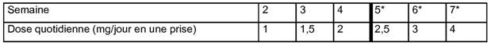

RÉSUMÉ DES CARACTÉRISTIQUES DU PRODUIT
ANSM - Mis à jour le : 28/07/2014
ADARTREL 0,25 mg, comprimé pelliculé
2. COMPOSITION QUALITATIVE ET QUANTITATIVE
Chaque comprimé pelliculé contient 0,25 mg de ropinirole (sous forme de chlorhydrate)
Excipient à effet notoire: 45,3 mg de lactose sous forme monohydraté.
Pour la liste complète des excipients, voir rubrique 6.1.
Comprimé pelliculé.
Comprimé blanc, de forme pentagonale, biseautée, gravé « SB » sur une face et « 4890 » sur l'autre face.
4.1. Indications thérapeutiques
ADARTREL est indiqué dans le traitement symptomatique du Syndrome des Jambes Sans Repos idiopathique modéré à sévère (voir rubrique 5.1).
4.2. Posologie et mode d'administration
Adultes
La posologie doit être adaptée individuellement, en fonction de l'efficacité et de la tolérance.
Le ropinirole doit être administré au moment du coucher mais pas plus de 3 heures avant celui-ci. Le ropinirole peut être pris au cours du repas afin d'améliorer la tolérance gastro-intestinale.
Instauration du traitement (semaine 1):
La dose initiale recommandée est de 0,25 mg, une fois par jour (comme indiqué ci-dessous) pendant deux jours. Si cette dose est bien tolérée, elle sera augmentée à 0,5 mg, une fois par jour jusqu'à la fin de la première semaine.
Poursuite du traitement (à partir de la semaine 2):
Après la phase d'instauration du traitement, la dose quotidienne sera augmentée jusqu'à l'obtention d'une réponse thérapeutique optimale. Dans les essais cliniques, la dose moyenne utilisée, chez les patients ayant un Syndrome des Jambes Sans Repos modéré à sévère, a été de 2 mg une fois par jour.
La dose peut être augmentée jusqu'à 1 mg une fois par jour à la deuxième semaine. La dose peut ensuite être augmentée de 0,5 mg par semaine sur les deux semaines suivantes, jusqu'à atteindre une dose de 2 mg une fois par jour. Chez certains patients, pour obtenir une amélioration optimale, la dose pourra être augmentée progressivement jusqu'à 4 mg au maximum, en une prise par jour. Au cours des essais cliniques, la dose a été augmentée de 0,5 mg par semaine jusqu'à atteindre la dose de 3 mg une fois par jour, puis de 1 mg jusqu'à atteindre la dose maximale recommandée de 4 mg une fois par jour, comme le montre le tableau 1.
Des doses supérieures à 4 mg une fois par jour n'ont pas été étudiées chez les patients ayant un Syndrome des Jambes Sans Repos.
Tableau 1: Schéma posologique

*Pour atteindre une amélioration optimale chez certains patients.
L'efficacité du traitement par ropinirole n'a pas été démontrée au-delà de 12 semaines (voir rubrique 5.1). Après 12 semaines de traitement, la réponse du patient et la nécessité de poursuivre le traitement devront être réévaluées.
Si le traitement est interrompu pendant plus de quelques jours, la reprise du traitement devra se faire selon le même schéma posologique que celui décrit plus haut.
Enfants et adolescents
ADARTREL n'est pas recommandé chez les enfants de moins de 18 ans en raison de l'absence de données de tolérance et d'efficacité.
Sujets âgés
La clairance du ropinirole est diminuée de 15 % approximativement chez les patients de 65 ans et plus. Bien qu'un ajustement de la dose ne soit pas nécessaire, la posologie de ropinirole doit être adapté individuellement pour une réponse clinique optimale avec une surveillance étroite de la tolérance.
Insuffisants rénaux
Chez les patients ayant une insuffisance rénale légère à modérée (clairance de la créatinine comprise entre 30 et 50 ml/min), il n'est pas nécessaire d'adapter la posologie.
Une étude sur l'utilisation du ropinirole chez les patients atteints d'insuffisance rénale terminale (patients sous hémodialyse) a montré qu'un ajustement de la dose chez ces patients est nécessaire selon la description ci après: la dose initiale recommandée d'ADARTREL est de 0,25 mg une fois par jour. Ensuite les augmentations de doses seront basées sur la tolérance et l'efficacité. Chez les patients régulièrement hémodialysés, la dose maximale recommandée d'ADARTREL est de 3 mg par jour. Après l'hémodialyse, des doses supplémentaires ne sont pas nécessaires (voir rubrique 5.2).
L'utilisation du ropinirole chez les patients présentant une insuffisance rénale sévère (clairance de la créatinine inférieure à 30 ml/min) sans hémodialyse régulière n'a pas été étudiée.
· Hypersensibilité à la substance active ou à l'un des excipients.
· Insuffisance rénale sévère (clairance de la créatinine < 30 ml/min) sans hémodialyse régulière.
· Insuffisance hépatique.
4.4. Mises en garde spéciales et précautions d'emploi
Le ropinirole ne devra pas être utilisé pour traiter l’akathisie, la tasikinésie (tendance compulsive à la marche induite par les neuroleptiques) ou un Syndrome des Jambes Sans Repos secondaire (par exemple : lié à une insuffisance rénale, à une anémie par carence martiale ou à une grossesse).
Une aggravation paradoxale des symptômes du Syndrome des Jambes Sans Repos décrite comme augmentation (début des symptômes plus précoce, intensité plus importante ou extension des symptômes à des membres précédemment non atteints) ou rebond en début de matinée (réapparition des symptômes tôt le matin) a été observée au cours du traitement par le ropinirole. Dans ce cas, l’intérêt d’un traitement par le ropinirole devra être réévalué et une adaptation de la posologie ou un arrêt du traitement devront être envisagés (voir rubrique 4.8).
Le ropinirole utilisé dans la maladie de Parkinson a été peu fréquemment associé, à une somnolence et des accès de sommeil d’apparition soudaine (voir rubrique 4.8), cependant, ceci est très rare dans le Syndrome des Jambes Sans Repos. Néanmoins, les patients doivent être informés de la possibilité de survenue de ces effets et ils doivent être avertis d'être prudents lors de la conduite automobile ou l’utilisation de machines pendant le traitement avec ropinirole.
Les patients ayant présenté une somnolence ou des accès de sommeil d’apparition soudaine ne doivent pas conduire de véhicules ou utiliser des machines. Une réduction de la posologie ou un arrêt du traitement pourra être envisagé.
Les patients présentant des troubles psychotiques majeurs ne doivent pas être traités par des agonistes dopaminergiques à moins que le bénéfice attendu l’emporte sur le risque encouru.
Troubles du contrôle des impulsions
Les patients doivent être régulièrement surveillés à la recherche de l’apparition de troubles du contrôle des impulsions. Les patients et les soignants doivent être informés du risque de survenue des troubles du contrôle des impulsions comprenant le jeu pathologique, l’augmentation de la libido, l’hypersexualité, les dépenses ou les achats compulsifs, la consommation excessive de nourriture et les compulsions alimentaires chez les patients traités par des agonistes dopaminergiques, dont ADARTREL. Une diminution de la dose ou un arrêt progressif du traitement doivent être envisagés en cas de survenue de tels symptômes.
Le ropinirole devra être administré avec prudence aux patients ayant une insuffisance hépatique modérée. La survenue d’effets indésirables devra être étroitement surveillée.
Les patients présentant des problèmes héréditaires rares d’intolérance au galactose, de déficit en lactase ou un syndrome de malabsorption du glucose et du galactose ne doivent pas prendre ce médicament.
En raison du risque d’hypotension, les patients ayant une affection cardio-vasculaire sévère (en particulier insuffisance coronarienne) doivent être traités avec prudence.
4.5. Interactions avec d'autres médicaments et autres formes d'interactions
Le ropinirole est principalement métabolisé par l'isoenzyme CYP1A2 du cytochrome P450. Une étude pharmacocinétique (avec du ropinirole à la dose de 2 mg, 3 fois par jour) a mis en évidence que la ciprofloxacine a augmenté la Cmax et l'aire sous la courbe (AUC) du ropinirole, respectivement de 60 et 84%, avec un risque potentiel d'effets indésirables. Ainsi, chez les patients recevant déjà du ropinirole, il peut être nécessaire d'ajuster la posologie du ropinirole quand des médicaments connus pour inhiber le CYP1A2 (tels que la ciprofloxacine, l'énoxacine ou la fluvoxamine) sont introduits ou arrêtés.
Une étude d'interaction pharmacocinétique menée entre le ropinirole (à une posologie de 2 mg, 3 fois par jour) et la théophylline, un substrat du CYP1A2, n'a pas mis en évidence de modification de la pharmacocinétique du ropinirole ou de la théophylline. Par conséquent, il n’est pas attendu que le ropinirole interagisse avec les autres médicaments métabolisés par le cytochrome CYP1A2.
Les données in vitro ont montré qu’aux doses thérapeutiques, le ropinirole a un faible potentiel inhibiteur du cytochrome P450. Il est donc peu probable que le ropinirole altère la pharmacocinétique des autres médicaments par la voie du cytochrome P450.
Fumer provoque une induction du métabolisme de l’isoenzyme CYP1A2. Ainsi, lorsqu’un patient arrête ou commence à fumer pendant un traitement par ropinirole, une adaptation de la posologie peut être nécessaire.
Une augmentation des concentrations plasmatiques du ropinirole a été observée chez les patientes traitées par une hormonothérapie substitutive. Chez les patientes recevant déjà une hormonothérapie substitutive, le traitement par le ropinirole peut être commencé de façon habituelle. Toutefois, une adaptation de la posologie du ropinirole pourra être nécessaire, au regard de la clinique, en cas d’instauration ou d'arrêt d’une hormonothérapie substitutive.
Aucune interaction pharmacocinétique n'a été observée entre le ropinirole et la dompéridone (médicament indiqué dans le traitement des nausées et des vomissements), qui pourrait justifier un ajustement de la posologie de l'un ou l'autre de ces médicaments. La dompéridone antagonise les effets dopaminergiques périphériques du ropinirole et ne traverse pas la barrière hémato-méningée. D’où son intérêt comme anti-émétisant chez les patients traités avec un agoniste dopaminergique d’action centrale.
Les neuroleptiques et autres antagonistes dopaminergiques à action centrale, comme le sulpiride ou métoclopramide, peuvent diminuer l’efficacité du ropinirole. Par conséquent, l’association du ropinirole à ces médicaments doit être évitée.
Chez les sujets recevant l'association : antagonistes de vitamine K et ropinirole, des cas de déséquilibre de l’INR ont été rapportés. Une augmentation de la surveillance clinique et biologique (INR) est justifiée.
Il n'y a pas de données sur l’utilisation du ropinirole chez la femme enceinte.
Les études chez l’animal ont montré une toxicité sur la reproduction (voir rubrique 5.3). Le risque potentiel dans l’espèce humaine étant inconnu, le ropinirole n’est pas recommandé pendant la grossesse à moins que le bénéfice attendu pour la patiente l’emporte sur le risque potentiel encouru par le fœtus.
Allaitement
Le ropinirole ne doit pas être utilisé chez les femmes qui allaitent car il peut inhiber la lactation
4.7. Effets sur l'aptitude à conduire des véhicules et à utiliser des machines
Les patients traités par ropinirole présentant une somnolence et/ou des accès de sommeil d'apparition soudaine, doivent être informés qu'ils ne doivent pas conduire de véhicules ni exercer une activité où une altération de leur vigilance pourrait les exposer eux-mêmes ou d'autres personnes à un risque d'accident grave ou de décès (par exemple l'utilisation de machines), et ce jusqu'à la disparition de ces effets (voir rubrique 4.4).
Les effets indésirables ci-dessous sont classés par système organe et par fréquence. Les fréquences issues des essais cliniques sont déterminées comme ayant une incidence supérieure à celle du placebo et sont classées en : très fréquent (≥1/10), fréquent (≥1/100 à <1/10), peu fréquent (≥1/1 000 à <1/100), rare (≥ 1/10 000 à < 1/1 000), très rare (< 1/10 000), indéterminé (la fréquence ne peut pas être estimée avec les données disponibles).
Au sein de chaque groupe de fréquence, les effets indésirables sont présentés par ordre décroissant de gravité.
Utilisation du ropinirole dans le Syndrome des Jambes Sans Repos
Au cours des essais cliniques chez les patients ayant un Syndrome des Jambes Sans Repos, les effets indésirables les plus fréquemment observés ont été des nausées (environ 30 % des patients). En général, les effets indésirables ont été d’intensité légère à modérée et sont survenus en début de traitement ou lors de l’augmentation de la posologie. Peu de patients sont sortis d’essai en raison d’effets indésirables.
Le tableau 2 ci-dessous présente les effets indésirables rapportés à une fréquence supérieure ou égale à 1% par rapport à celle du placebo lors des essais cliniques sur 12 semaines chez les patients traités par ropinirole, ou ceux rapportés de manière peu fréquente mais connus pour être associés au ropinirole.
Tableau 2 : Effets indésirables rapportés lors des essais cliniques sur 12 semaines chez les patients ayant un Syndrome des Jambes Sans Repos (ropinirole : n = 309 ; placebo : n = 307)
|
Troubles psychiatriques |
|
|
· Fréquent |
Nervosité |
|
· Peu fréquent |
Confusion |
|
Troubles du système nerveux |
|
|
· Fréquent |
Syncope, somnolence, vertiges |
|
Troubles vasculaires |
|
|
· Peu fréquent |
Hypotension orthostatique, hypotension |
|
Troubles gastro-intestinaux |
|
|
· Très fréquent |
Vomissements, nausées |
|
· Fréquent |
Douleurs abdominales |
|
Troubles généraux |
|
|
· Fréquent |
Fatigue |
Tableau 3 : Effets indésirables rapportés lors d’autres essais cliniques chez les sujets ayant un Syndrome des Jambes Sans Repos
|
Troubles psychiatriques |
|
|
· Peu fréquent |
Hallucinations |
|
Troubles du système nerveux |
|
|
· Fréquent |
Augmentation, rebond en début de matinée (voir rubrique 4.4) |
Prise en charge des effets indésirables
Une réduction de la posologie devra être envisagée en cas de survenue d’effets indésirables significatifs. Après amélioration de l’effet indésirable, la posologie pourra être ré-augmentée progressivement. Des médicaments anti-nauséeux qui ne sont pas des antagonistes dopaminergiques d’action centrale, tels que la dompéridone, peuvent être utilisés, si nécessaire.
Autre expérience clinique avec le ropinirole
Le ropinirole est aussi indiqué dans le traitement de la maladie de Parkinson. Les effets indésirables rapportés avec une incidence supérieure à celle du placebo chez les patients ayant une maladie de Parkinson traités par le ropinirole, en monothérapie ou en association, à des doses allant jusqu’à 24 mg par jour, sont présentés ci-dessous.
Tableau 4 : Effets indésirables rapportés lors des essais cliniques dans la maladie de Parkinson à des doses allant jusqu’à 24 mg par jour.
|
Troubles psychiatriques |
|
|
· Fréquent |
Hallucinations, confusion |
|
· Peu fréquent |
Augmentation de la libido |
|
Troubles du système nerveux |
|
|
· Très fréquent |
Syncope, dyskinésie, somnolence |
|
Troubles gastro-intestinaux |
|
|
· Très fréquent |
Nausées |
|
· Fréquent |
Vomissements, douleurs abdominales, brûlures d’estomac |
|
Troubles généraux |
|
|
· Fréquent |
Oedème des membres inférieurs |
Données post-commercialisation
Réactions d'hypersensibilité (incluant urticaire, angioedème, éruption cutanée, prurit).
Des réactions psychotiques (autres que des hallucinations) incluant délires, illusions, paranoïa ont été observées.
Agression* (fréquence indéterminée)
*agression associée à des réactions psychotiques ainsi que des symptômes compulsifs
Troubles du contrôle des impulsions (fréquence indéterminée)
Jeu pathologique (compulsion au jeu), augmentation de la libido, hypersexualité, dépenses ou achats compulsifs, hyperphagie boulimique et compulsions alimentaires peuvent survenir chez des patients traités par des agonistes dopaminergiques, incluant ADARTREL (voir rubrique 4.4).
Le ropinirole utilisé dans la maladie de Parkinson est associé à une somnolence et, a été, peu fréquemment (≥1/1 000 à <1/100) associé à une somnolence diurne excessive et des accès de sommeil d’apparition soudaine. Cependant, ces effets sont très rares (<1/10 000) dans le Syndrome des Jambes Sans Repos.
Suite à l’administration du ropinirole, une hypotension orthostatique ou une hypotension, rarement sévère, a été rapportée peu fréquemment (≥1/1 000 à <1/100).
De très rares cas (<1/10 000) de réactions hépatiques, principalement une élévation des enzymes hépatiques, ont été rapportés.
Déclaration des effets indésirables suspectés
La déclaration des effets indésirables suspectés après autorisation du médicament est importante. Elle permet une surveillance continue du rapport bénéfice/risque du médicament. Les professionnels de santé déclarent tout effet indésirable suspecté via le système national de déclaration : Agence nationale de sécurité du médicament et des produits de santé (ANSM) et réseau des Centres Régionaux de Pharmacovigilance. Site internet: www.ansm.sante.fr
5. PROPRIETES PHARMACOLOGIQUES
5.1. Propriétés pharmacodynamiques
Classe pharmacothérapeutique: agoniste dopaminergique, Code ATC: N04BC04.
Mécanisme d'action
Le ropinirole est un agoniste dopaminergique non ergoté des récepteurs D2/D3 qui stimule les récepteurs dopaminergiques du striatum.
Efficacité clinique
ADARTREL doit être seulement prescrit aux patients présentant un Syndrome des Jambes Sans Repos idiopathique modéré à sévère. Les patients ayant un Syndrome des Jambes Sans Repos idiopathique modéré à sévère se plaignent généralement d'insomnie ou de gêne sévère au niveau des membres.
Dans quatre études randomisées sur 12 semaines évaluant le ropinirole versus placebo chez des patients présentant un Syndrome des Jambes Sans Repos, les effets sur les scores de l'échelle IRLS (International Restless Syndrome rating Scale) ont été comparés à la 12ème semaine par rapport à l'état initial. La dose moyenne de ropinirole chez les patients modérés à sévères était de 2 mg/jour. Dans une analyse regroupée de ces quatre études chez les patients présentant un Syndrome des Jambes Sans Repos modéré à sévère, la différence ajustée entre les deux groupes de traitement pour le score de l'échelle IRLS, à la semaine 12, en analyse LOCF (Last Observation Carried Forward) dans la population en intention de traiter a été, entre l'état initial et la semaine 12, de -4,0 points (IC95 % [-5,6; -2,4], p < 0,0001). Chez ces patients, le score moyen d'IRLS est passé de 28,4 à 13,5 dans le groupe ropinirole et de 28,2 à 17,4 dans le groupe placebo.
Une étude de polysomnographie sur 12 semaines, contrôlée contre placebo, chez des patients ayant un Syndrome des Jambes Sans Repos, a évalué l'effet du traitement par le ropinirole sur les mouvements périodiques des jambes durant le sommeil. Des différences statistiquement significatives ont été observées entre l'état initial et la semaine 12 pour l'indice des mouvements périodiques des jambes durant le sommeil.
L'analyse regroupée des données des quatre études randomisées sur 12 semaines évaluant le ropinirole versus placebo chez des patients présentant un Syndrome des Jambes Sans Repos modéré à sévère, a montré que les patients traités par ropinirole ont présenté une amélioration significative par rapport au placebo sur les domaines de l'échelle MOS Sleep (Medical Outcome Study Sleep) (Scores de 0 à 100 pour chaque domaine excepté pour la quantité de sommeil). Les différences ajustées entre les bras ropinirole et placebo ont été: de -15,2 (IC 95 % [-19,37; -10,94]; p < 0,0001) pour les troubles du sommeil, de 0,7 heure (IC95 % [0,49; 0,94]; p < 0,0001) pour la quantité de sommeil, de 18,6 (IC95 % [13,77; 23,45]; p< 0,0001) pour la qualité du sommeil et de -7,45 (IC95 % [-10,86; -4,23]; p < 0,0001) pour la somnolence diurne.
L'efficacité à long terme a été évaluée dans une étude clinique sur 26 semaines, randomisée, en double aveugle, contrôlée versus placebo. Les résultats globaux sont difficiles à interpréter en raison d'un effet centre et de la forte proportion de données manquantes. Un maintien de l'efficacité à 26 semaines, comparativement au placebo n'a pu être démontré.
Etude de l'effet du ropinirole sur la repolarisation cardiaque.
Une étude approfondie conduite chez des volontaires sains, hommes et femmes, recevant les doses 0,5 mg, 1 mg, 2 mg et 4 mg de ropinirole comprimé pelliculé (à libération immédiate) une fois par jour a montré, par rapport au placebo, une augmentation maximum de la durée de l'intervalle QT de 3,46 millisecondes (meilleur estimateur de la vraie différence) à la dose de 1 mg. La limite supérieure de l'intervalle de confiance à 95 % pour le plus grand effet moyen était inférieure à 7,5 millisecondes. L'effet du ropinirole à des doses plus élevées n'a pas été systématiquement évalué.
Les données cliniques disponibles issues de l'étude sur l'intervalle QT ne permettent pas d'indiquer un risque de prolongation de l'intervalle QT pour des doses de ropinirole supérieures à 4 mg/jour.
Dans les études cliniques, la plupart des patients étaient d'origine caucasienne.
5.2. Propriétés pharmacocinétiques
La biodisponibilité du ropinirole est d'environ 50 % (36 % à 57 %) avec une Cmax obtenue en moyenne 1,5 heure après la prise. Un repas riche en graisse diminue l'absorption de ropinirole, comme l’indique le retard du Tmax moyen de 2,6 heures et la diminution moyenne de 25% de la Cmax.
Distribution
La fixation du ropinirole aux protéines plasmatiques est faible (10 - 40%).
En raison de sa forte lipophilie, le volume de distribution du ropinirole est important (approximativement 7 l/kg).
Biotransformation
Le ropinirole est principalement métabolisé par l’enzyme CYP1A2 du cytochrome P450 et ses métabolites sont essentiellement éliminés par voie urinaire. Le métabolite principal est au moins 100 fois moins puissant que le ropinirole dans les modèles animaux explorant la fonction dopaminergique.
Elimination
La demi-vie d'élimination moyenne du ropinirole de la circulation systémique est d'environ 6 heures. Aucun changement dans la clairance du ropinirole n’est observé après une administration orale unique ou répétée. Une large variabilité inter-individuelle des paramètres pharmacocinétiques a été observée.
Linéarité/non linéarité
La pharmacocinétique du ropinirole est globalement linéaire (Cmax et ASC) dans l’intervalle thérapeutique entre 0,25 mg et 4 mg après dose unique et doses répétées.
Caractéristiques liées à la population
La clairance du ropinirole orale est réduite d'environ 15% chez les patients âgés (65 ans ou plus) par rapport aux patients plus jeunes. Une adaptation posologique n'est pas nécessaire chez les sujets âgés.
Insuffisants rénaux
Chez les patients présentant une insuffisance rénale légère à modérée (clairance de la créatinine comprise entre 30 et 50 ml/min), aucun changement de la pharmacocinétique du ropinirole n’est observé. La clairance du ropinirole orale est réduite d'environ 30% chez les patients présentant une insuffisance rénale terminale, hémodialysés régulièrement. La clairance orale des métabolites SKF-104557 et SKF-89124 est également réduite d'environ 80% et 60%, respectivement. Par conséquent, la dose maximale recommandée est limitée à 3 mg par jour chez ces patients présentant un Syndrome des Jambes Sans Repos (voir rubrique 4.2).
Population pédiatrique
Des données limitées de pharmacocinétiques obtenues chez des adolescents (12 à 17 ans, n = 9) ont montré qu’après l’administration de dose unique de 0,125 mg et 0,25 mg, l'exposition systémique a été similaire à celle observée chez l'adulte (voir aussi le sous paragraphe «Enfants et adolescents» de la rubrique 4.2).
5.3. Données de sécurité préclinique
Le profil toxicologique est déterminé principalement par l'activité pharmacologique du ropinirole: modifications du comportement, hypoprolactinémie, diminution de la pression artérielle et de la fréquence cardiaque, ptosis et salivation. Chez le rat albinos seulement une rétinite dégénérative a été observée dans une étude à long terme et à la plus forte dose (50 mg/kg/jour), probablement liée à une surexposition à la lumière.
Génotoxicité
Aucune génotoxicité n'a été observée lors de la série habituelle de tests in vitro et in vivo.
Carcinogénicité
Des études conduites durant deux ans chez la souris et le rat à des doses supérieures à 50 mg/kg/jour n'ont pas mis en évidence d'effet carcinogène chez la souris. Chez le rat, les seules lésions liées au ropinirole ont été une hyperplasie des cellules de Leydig et des adénomes testiculaires résultant de l'hypoprolactinémie induite par le ropinirole. Ces lésions ont été considérées comme un phénomène spécifique d'espèce et ne constituent pas un risque pour l'utilisation clinique du ropinirole.
Toxicité sur la reproduction
L'administration de ropinirole chez la rate gravide à des doses toxiques a montré une diminution du poids fœtal à la dose de 60
mg/kg/j (approximativement 15 fois l'AUC à la dose
maximale chez l'Homme), une augmentation de la mort fœtale à la dose de 90 mg/kg/j (approximativement 25 fois l'AUC à la dose maximale chez l'Homme) et des malformations digitales à la dose de 150 mg/kg/j (approximativement 40 fois l'AUC à la dose maximale chez l'Homme). Il n'a pas été mis en évidence d'effet tératogène chez le rat à la dose de 120 mg/kg/j (approximativement 30 fois l'AUC à la dose maximale chez l'Homme) et aucun indice ne laisse supposer un effet sur le développement chez le lapin.
Sécurité pharmacologique
Des études in vitro ont montré que le ropinirole inhibe les canaux hERG. L'IC50 est 30 fois plus élevée que la concentration plasmatique maximum attendue pour des patients traités aux plus fortes doses recommandées (4 mg/jour). Voir rubrique 5.1.
Lactose monohydraté, cellulose microcristalline, croscarmellose sodique, stéarate de magnésium.
Pelliculage
Hypromellose, macrogol 400, dioxyde de titane (E171), polysorbate 80 (E433).
Sans objet.
2 ans.
6.4. Précautions particulières de conservation
A conserver à une température ne dépassant pas 25°C.
A conserver dans l'emballage extérieur d'origine.
Pour les conditions de conservation du médicament après première ouverture, voir la rubrique 6.3
6.5. Nature et contenu de l'emballage extérieur
Plaquette thermoformée (PVC/PCTFE/Aluminium).
Plaquette thermoformée (PVC/PCTFE/PVC/Aluminium).
Boîte de 2 ou 12 comprimés.
Toutes les présentations peuvent ne pas être commercialisées.
6.6. Précautions particulières d’élimination et de manipulation
Pas d’exigences particulières pour l’élimination.
7. TITULAIRE DE L’AUTORISATION DE MISE SUR LE MARCHE
LABORATOIRE GLAXOSMITHKLINE
100 ROUTE DE VERSAILLES
78163 MARLY-LE-ROI CEDEX
8. NUMERO(S) D’AUTORISATION DE MISE SUR LE MARCHE
· 364 448-8 ou 34009 364 448 8 1: 2 comprimés sous plaquette thermoformée (PVC/PCTFE/Aluminium).
· 364 449-4 ou 34009 364 449 4 2: 12 comprimés sous plaquettes thermoformées (PVC/PCTFE/Aluminium).
· 391 838-8 ou 34009 391 838 8 6: 2 comprimés sous plaquette thermoformée (PVC/PCTFE/PVC/ Aluminium).
· 391 839-4 ou 34009 391 839 4 7: 12 comprimés sous plaquette thermoformée (PVC/PCTFE/PVC/ Aluminium).
·
9. DATE DE PREMIERE AUTORISATION/DE RENOUVELLEMENT DE L’AUTORISATION
[à compléter par le titulaire]
10. DATE DE MISE A JOUR DU TEXTE
[à compléter par le titulaire]
Sans objet.
12. INSTRUCTIONS POUR LA PREPARATION DES RADIOPHARMACEUTIQUES
Sans objet.
Liste I.